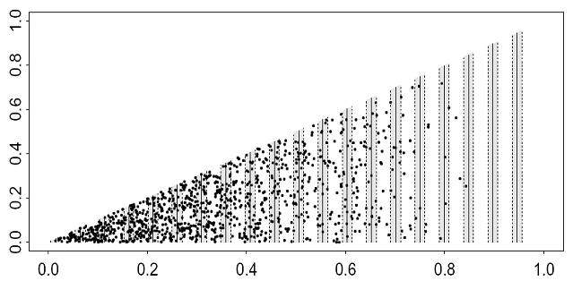
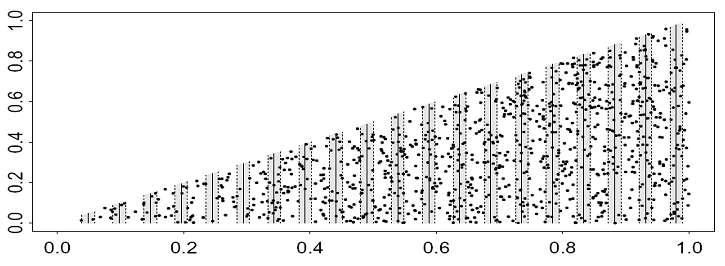

Variance estimation for systematic designs
Distance for Windows exercise
In the lecture describing measures of precision we explained systematic survey designs usually have the best variance properties, but obtaining good estimates of the variance is a difficult problem for statisticians. In this exercise we give an example of a situation where the systematic design gives a density estimate with much better precision than a random design.
This means that the usual variance estimators used in Distance, which are based on a random design, give variance estimates that are far too high. The true variance is low, but the estimated variance is high. We will see how to implement a post-stratification scheme that enables us to get a better estimate of the variance.
We also look at another case to see that the unstratified variance estimates provided by Distance are usually fine for a systematic design: things only go wrong when there are very strong trends in animal density, especially when the strong trends are associated with changes in line length (e.g., the highest densities always occur on the shortest lines, or vice versa).
We begin with the population and survey shown below. All the populations in this exercise are simulated on a computer: they are not real data. Note the characteristics: extreme trends with very high density on short lines and very low density on long lines. Additionally, the systematic design (search strips are shaded) covers a fairly large portion of the survey area. These are the danger signals that the usual Distance variance estimators might not work well, and a post-stratification scheme should be considered.
The survey region is a triangle, with dimensions 1km by 1km. The systematically placed search strips are shaded.

Basic variance estimation, with bootstrapping
- Download and open the Distance project Systematic_variance_2.zip.
- On the Analysis tab, click New Analysis. Rename it Without post-stratification.
- Under Model definition, click Properties. Rename the new model: No_adjustments_plus_bootstrap.
- Click the tab for Detection function, and click Adjustment terms. Select Manual selection so that no adjustment terms are fitted. Select the Constraints button, and click No constraints. These options will reduce the work that has to be done during bootstrapping.
- Click the tab for Variance, and check the box for Bootstrap variance estimate: Select non-parametric bootstrap. The box Resample samples should be checked (this means resample transect lines). Leave the other settings at default, noting that there will be 999 bootstrap resamples conducted.
- Click OK and then run the model. You can see the progress of the bootstrap in the bar at the top. Wait a few moments until the bootstrapping is completed.
- Your analytic output should resemble this:
| Estimate | %CV | df | Lower 95% Confidence bound | Upper 95% Confidence bound | |
|---|---|---|---|---|---|
| D | 2044.6 | 27.70 | 20.74 | 1161.0 | 3600.6 |
| N | 1022.0 | 27.70 | 20.74 | 581.0 | 1800.0 |
- Because we have simulated these data, we know the true values. The true number of animals in the survey region is N=1000, and the true density is D=2000 km-2 (1000 animals in an area of size A=0.5 km2). The point estimates are good, but what do you think about the precision in the output above?
- Find the bootstrapped confidence intervals for D and N, and check whether they are similar to the confidence intervals above.
- What percentage of the total density variance is attributed to encounter rate estimation and what percentage to the detection function estimation?
Variance estimation for systematic designs using post-stratification
Recall we have a particular situation in which we have systematically placed transects, unequal in length. Furthermore there exists an east-west gradient in animal density juxtaposed such that the shortest lines are those that pass through the portion of the study area with the highest density. We examine a means by which we can use post-stratification to produce a better estimate of the variance in estimated density.
Post-stratification to improve variance estimation
The estimation of encounter rate variance above used estimators that assumed the transect lines were randomly placed throughout the triangular region. In our case, the transects were not random, but systematic. In some circumstances, this can reduce the encounter rate variance a great deal.
The data we are working with is an example of this. There are very high densities on the very shortest lines. In samples of lines collected using a completely random design, the sample by chance might not contain any of these very short lines, or it might contain several. The variance is therefore very high, because the density estimates will be greatly affected by how many lines fall into the short-line / high-density region: we will get very low density estimates if there are no short lines, but very high density estimates if there are several short lines. By contrast, in a systematic sample, we cover the region methodically and we will always get nearly the same number of lines falling in the high density region. The systematic density variance is therefore much lower than the random placement density variance.
Although there is no way of getting a variance estimate that is exactly unbiased for a systematic sample1, we can greatly improve on the random-based estimate by using a post-stratification scheme. This works by grouping together pairs of adjacent lines from the systematic sample. Each pair of adjacent lines is grouped into a stratum. The strata will improve variance estimation, because the systematic sample behaves more like a stratified sample than a random sample.
Follow the steps below.
Open the Distance project we used in the previous section (Systematic_variance_2.dst; is has the “.dst” extension because you uncompressed it minutes ago).
Click the Analyses tab, and click the “New analysis” button to create a new analysis. Double click the grey ball and the Analysis Details Window should come up. Name the new analysis something like With post stratification.
Under Model Definition, click New. Change the name at the bottom of the dialogue box to Poststratified_no_adjustments_no_bootstrap. (We don’t want to conduct a bootstrap for our poststratified data, because it would involve some extra confusion and is not necessary.) In the Variance tab, click
Advanced..., and select the option “Post-stratify, grouping adjacent pairs of samplers”. Un-tick the option “Select non-parametric bootstrap”.Click OK and then Run to run the analysis. How does the variance and confidence limits compare with those you obtained in the previous section? What are the implications? Note what percentage of the overall variance now comes from encounter rate and from estimating the detection function, and compare this with the earlier percentages.
Now try the overlapping post-stratification option. A simulation study in (Fewster et al., 2009) concluded that its performance was very similar to, but marginally better than the regular post-stratification. When the sample size of lines is small, it gives more post-strata and so is to be preferred for that reason. Create a new analysis, called say With overlapping post stratification, and then a new Model Definition for that analysis, in which you choose the Advanced variance option “Post-stratify, with overlapping strata made up of adjacent samplers”. How does the variance compare with those you previous obtained? How do the degrees of freedom in the Estimation Summary – Encounter Rate page of output compare with that from the previous question?
(Optional) If you wish, you can try manual post-stratification. This is good practice if you need to do post-stratification for point transect studies. In this case you will have to add a new field to the sample layer, and then set up a new model definition in which you tell Distance to use post-stratification. Here goes:
- Click the Data tab. Click the padlock button on the toolbar to unlock the data sheet for modification.
- On the left-hand outline, click Line transect. The data sheet expands to 20 rows, each row corresponding to one line transect. This is the best format for the data sheet to be in when entering a new stratum number for each transect.
- Click on the cell corresponding to Line transect Label 1. Several buttons on the tool-bar should become live. Click on the button corresponding to Append field after current. (The button has an arrow pointing sideways then downwards.)
- You are prompted for Field name: enter VarGroup to indicate that you are grouping lines together for the purpose of variance estimation. Click Field type: Integer, and click OK.
- You can now enter the line groupings for post-stratified variance estimation. Enter label 1 for lines 1 and 2; label 2 for lines 3 and 4; label 3 for lines 5 and 6; and so on, to finish with label 10 for lines 19 and 20. You have now defined 10 strata, each containing two adjacent transect lines from the systematic sample of lines.
- After entering the column of VarGroup labels, click the padlock button again to lock the data sheet.
- Now we will analyse the post-stratified data. Click the Analyses tab. Create a new analysis with a suitable name - .e.g, Manual post stratification
- Create a new Model definition, with a suitable name. In the Estimate tab, click the button for Poststratify. Select Layer type: sample, and Field name: VarGroup. This means that we want to poststratify at the sample (transect) level, using our newly defined groupings VarGroup to delimit the strata.
- For the levels of resolution, select the following:
- Density: Global and Stratum
- Encounter Rate: Stratum only
- Detection function: Global only
- Cluster size (not required): Global only
These settings ensure that it is only encounter rate variance that is affected by the post-stratification scheme; the detection function is still pooled over all observations as before.
In the next field, enter Global density estimate is Mean of stratum estimates, and in the next field select Weighted by Total effort in stratum. Do not tick the box saying Strata are Replicates.
Click OK and run the new model. The point estimates should be the same as the previous non-overlapping post stratification run.
Note: The precision of D and N are greatly improved in the post-stratified analyses. Note that we are not getting something for nothing: the second analysis is giving us an answer much closer to the true answer, while the first analysis was simply giving us the wrong answer. We have not changed the true variance by our post-stratification scheme: we are just getting a better estimate of the true variance. Because the data above were generated by simulation, we can use repeated simulated surveys to check that the second answer is indeed close to the true density variance over the repeats.
Systematic designs where post-stratification is not needed
The following simulated population does not exhibit strong trends across the survey region. Otherwise, the strip dimensions and systematic design are the same as for the previous example.

Download and open the project Systematic_variance_1.zip. Add the new data column VarGroup before conducting any analyses this time. With the augmented data, repeat the analyses you performed on the Systematic_variance_2.zip project. Find the relevant outputs. Has the post-stratification scheme been necessary in this case?
References
Footnotes
because it is effectively a sample of size 1 – only the first line position was randomly chosen, and the rest followed on deterministically from there.↩︎